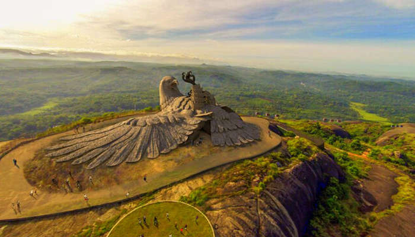
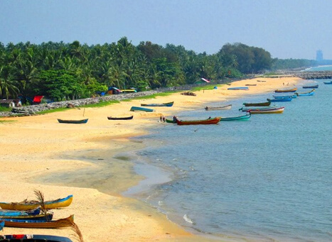
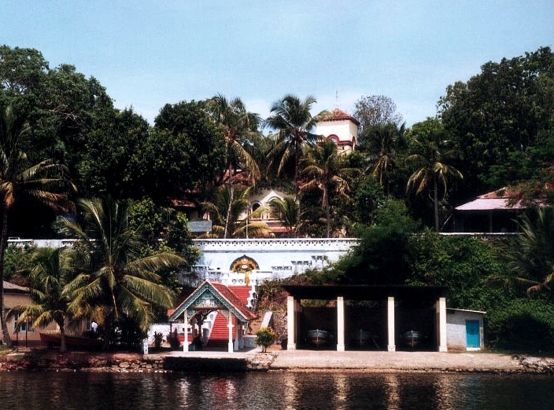
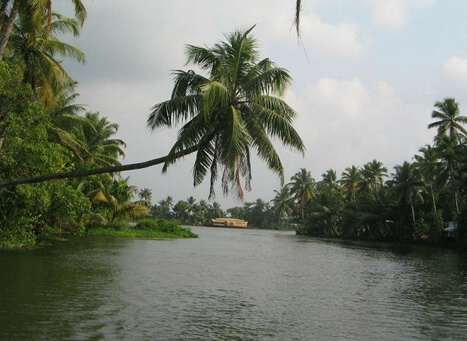

Top 5 places to visit in Kollam
Jatayu Earth's Center
Jatayu Earth Center, also known as Jatayu Nature Park or Jatayu Rock, is a park and tourism centre at Chadayamangalam in Kollam district of Kerala. It stands at an altitude of 350m above the mean sea level. Jatayu Nature Park holds the distinction of having the world’s largest bird sculpture, which is of Jatayu.
The park located near the town of Chadayamangalam (Jatayumangalam), which was named for Jatayu. Jatayu was a demi-god in Ramayana (a Hindu epic) who had the form of a vulture.
According to the epic, Ravana was attempting to abduct Sita to Lanka when Jatayu tried to rescue her. Jatayu fought valiantly with Ravana, but as Jatayu was very old Ravana soon defeated him, clipping his wings, and Jayatu fell onto the rocks in Chadayamangalam. Rama and Lakshmana while on the search for Sita, chanced upon the stricken and dying Jatayu, who informed them of the battle with Ravana and told them that Ravana had headed South

Mahatma Gandhi Beach
The Mahatma Gandhi Beach & Park is a very interesting place, which combines a beach and a well-maintained park, where tourists can sit and relax while enjoying the natural beauty surrounding the place. This place is situated at Kochupilamoodu, which is just 2 km away from the Kollam town and was inaugurated in 1961. The park area is suitable for long walks along the shoreline and to witness the beauty of Arabian Sea, which looks most appealing during dusk.

Palaruvi Waterfalls
Palaruvi Waterfalls, which literally translates to ‘Stream of Milk’, comes down through rocks from a height of 300 feet. This has turned into a delightful picnic spot where one can enjoy a spectacular view uninterrupted. The rocky terrain one has to traverse before reaching it can be cumbersome but once these majestic waterfalls come into sight, any kind of fatigue disappears immediately. The cool water is frequented by those seeking a refreshing dip and it regularly attracts people in large numbers.

Thevally Palace
Thevally Palace is a kind of architectural marvel situated at Kollam city. It was built in between 1811 and 1819, during the reign of Gowri Parvati Bayi. The Kings of Travancore had used Thevally Palace during their visits to Kollam in order to meet the British Residents and to discuss with the officials. The architecture of the palace is a mixture of British, Dutch and Portuguese.The palace was once used for the administrative purposes. Kollam was the capital of Travancore kingdom then. The total skeleton of the palace, made of materials like laterire and lime plaster. The main attraction of the palace is that, it is situated on the banks of Ashtamudi Lake. The palace includes a temple of Lord Sastha

Ashtamudi Lake
Ashtamudi Lake (Ashtamudi Kayal), in the Kollam District of the Indian state of Kerala, is the most visited backwater and lake in the state. It possesses a unique wetland ecosystem and a large palm-shaped (also described as octopus-shaped) water body, second only in size to the Vembanad estuary ecosystem of the state. Ashtamudi means 'eight braids' (Ashta : 'eight'; mudi : 'hair braids') in the local Malayalam language. The name is indicative of the lake's topography with its multiple branches. The lake is also called the gateway to the backwaters of Kerala and is well known for its houseboat and backwater resorts.
